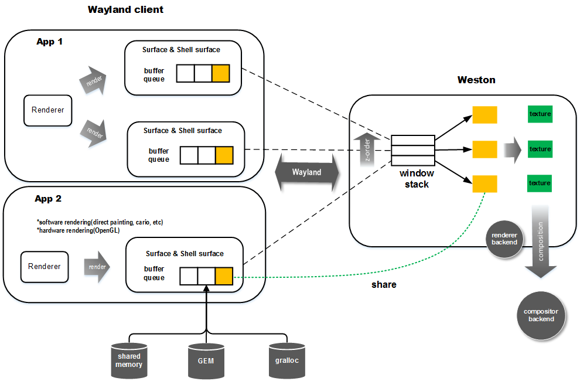
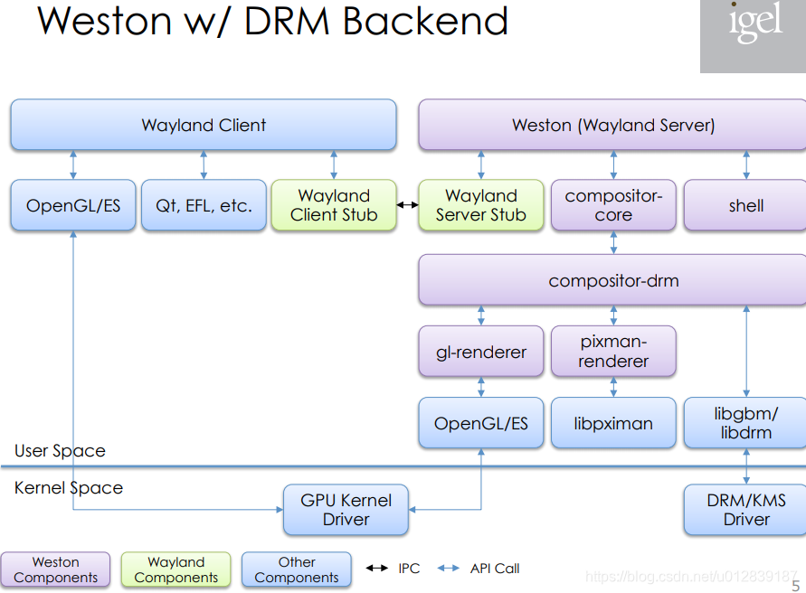
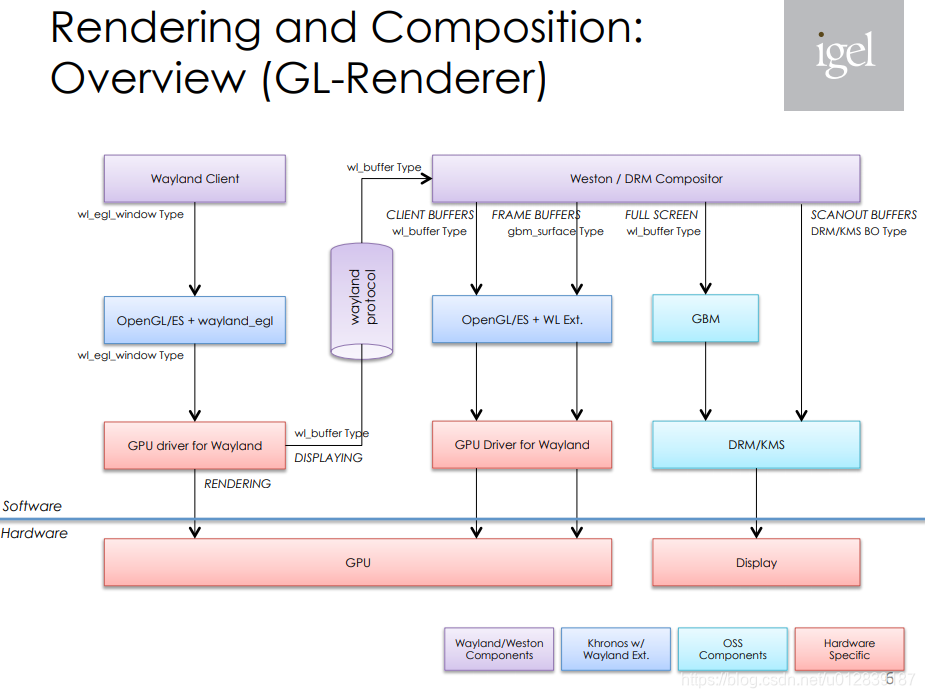
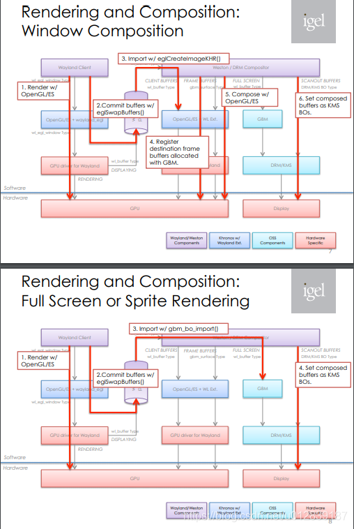

渲染流水线
一个Wayland client要将内存渲染到屏幕上，首先要申请一个graphic buffer，绘制完后传给Wayland compositor并通知其重绘。Wayland compositor收集所有Wayland client的请求，然后以一定周期把所有提交的graphic buffer进行合成。合成完后进行输出。本质上，client需要将窗口内容绘制到一个和compositor共享的buffer上。这个buffer可以是普通共享内存，也可以是DRM中的GBM或是gralloc提供的可供硬件（如GPU）操作的graphic buffer,当然你也可以直接调用ion的接口去创建buffer。在大多数移动平台上，没有专门的显存，因此它们最终都来自系统内存，区别在于图形加速硬件一般会要求物理连续且符合对齐要求的内存。如果是普通共享内存，一般是物理不连续的，多数情况用软件渲染。有些图形驱动也支持用物理不连续内存做硬件加速，但效率相对会低一些。根据buffer类型的不同，client可以选择自己绘制，或是通过Cairo，OpenGL绘制，或是更高层的如Qt，GTK+这些widget库等绘制。绘制完后client将buffer的handle传给server，以及需要重绘的区域。在server端，compositor将该buffer转为纹理（如果是共享内存使用glTexImage2D上传纹理[我在gl_render_attach_shm中没有找到这个函数，只看到了ensure_textures,fd的传输是在client创建buffer的时候的surface_attach,对应的内容应该就在wl_shm_pool之中；因为虽然client到server直接给fd，ok，那么server到gpu的copy是哪里实现的呢？猜测可能是get_surface_state->gl_renderer_create_surface->gl_renderer_flush_damage;或者weston_output_repaint->output_accumulate_damage->surface_flush_damage]，
硬件加速buffer用GL_OES_EGL_image_external扩展生成外部纹理）。最后将其与其它的窗口内容进行合成。下面是抽象的流程图。


使用drm-backend，client绘画如果用opengl+opengles，直接与gpu的driver交互；compositor下面的gl-renderer与pixman-renderer一般是二选一。

标准的基于egl的绘画，可以参考simple-egl.c的代码，client调用opengl/opengles实现绘画，最终是eglswapbuffer；server这边有对应buffer的gbm object以及handle，根据damage等条件，一系列条件决定合成，合成会最少有一张经过gpu合成的完整的scan-out图（可能有overlay，也可能有cursor）然后addfb2为对应的buffer创建framebuffer对象，并且返回fbid，后面就是ioctl的标准处理流程

参考https://github.com/wayland-project/weston/blob/master/clients/simple-shm.c & https://github.com/wayland-project/wayland/blob/master/protocol/wayland.xml
写在前面：
https://www.apertis.org/waylandevaluation/compositors/
weston: Main Page - doxygen documentation | Fossies Dox
wayland: Main Page - doxygen documentation | Fossies Dox
客户端渲染
在Wayland架构中，客户端UI的所有呈现均由客户端代码执行，通常由客户端使用的图形工具包执行。 这与X11的现代用法没有什么不同。
图形工具箱可以使用其希望呈现UI元素的任何方法：在CPU上进行软件呈现，或使用GLES进行硬件呈现。 Wayland所需要做的就是将客户端渲染的每个帧和窗口的结果像素发送到合成器。 像素数据可能以几种方式传输，具体取决于渲染方式以及客户端和合成器相互支持的内容：
- 包含实际像素数据的共享内存缓冲区。 如果没有其他机制，则支持这些备用机制。
- GPU缓冲区共享（DRM / DRI）。 客户端直接在GPU上渲染窗口，结果像素数据保留在GPU内存中，并将其句柄传递给合成器。 这防止了像素数据的不必要和昂贵的复制。
合成器的工作
一旦合成器拥有了所有像素数据（或包含它的GPU缓冲区的句柄），它便可以合成一帧。 与客户端渲染一样，这可以通过几种方式完成：
- 软件渲染。 CPU密集型，用作备用。 这还需要将像素数据从GPU内存中拉出，这很昂贵。
- 使用GLES进行完整的GPU渲染。 这将获取像素数据并在GPU上对其进行合成，如果动画需要的话，可能会应用着色器和3D转换。
- 显示控制器上特定于硬件的API。 这些通常是2D合成API，与完整的3D计算相比，它们的资源占用较少，但仍在显示控制器而非CPU上进行处理，并且不需要额外的像素数据副本。
例如，在传统的显卡上，可能有四个硬编码覆盖层:
- Primary: main overlay
- Scanout: a single, full-screen surface
- Sprite: typically a video overlay in a different colour space
- Cursor
需要注意的是，如何通过client使用的api去反推server的操作，需要多参考wayland/protocol里面的协议文件。display:weston:查询clinet api对应server的具体实现_maze的专栏-CSDN博客
1.buffer
weston-simple-shm::create_shm_buffer
用户空间：
struct buffer {
struct wl_buffer *buffer;
void *shm_data;
int busy;
};
fd = os_create_anonymous_file(size);
用户空间创建size大小文件，取得fd。
data = mmap(NULL, size, PROT_READ | PROT_WRITE, MAP_SHARED, fd, 0);
将fd用户空间buffer映射到进程内核空间。
pool = wl_shm_create_pool(display->shm, fd, size);
这个地方创建一个pool。这个pool可以很大，然后后续wl_shm_pool_create_buffer再从这个pool中分出来一部分用作绘画
对应的server端操作: wayland/src/wayland-shm.c::shm_create_pool
struct wl_shm_pool *pool;
pool->data = mmap(NULL, size, PROT_READ | PROT_WRITE, MAP_SHARED, fd, 0);[server]
创建pool。映射同一个fd;此时client与weston达成共享内存。
也通过server端的操作，为client端的wl_shm_pool赋值。并最终将pool传给client
wl_resource_set_implementation(pool->resource,
&shm_pool_interface,
pool, destroy_pool);
需要明确，buffer是用户端创建的，用户端和server端通过传递fd实现buffer共享。
用户空间:
buffer->buffer = wl_shm_pool_create_buffer(pool, 0, width, height, stride, format);
这个buffer->buffer对应的是wl_buffer结构体。从pool中取出一部分，套上一个wl_buffer
对应的server端操作: wayland/src/wayalnd-shm.c::shm_pool_create_buffer
创建wl_shm_buffer结构体，并赋值，width/height/format/stride/offset；将之前创建的pool结构体付给buffer。
buffer->pool = pool;
通过pool获取wl_buffer，对用户空间的buffer进行赋值。注意是将wl_shm_buffer赋给wl_buffer
wl_resource_set_implementation(buffer->resource,
&shm_buffer_interface,
buffer, destroy_buffer);
用户空间:
wl_shm_pool_destroy(pool);
对应的server端操作: wayland/src/wayalnd-shm.c::shm_pool_destroy,随后调用wl_resource_destroy
内部计数器-1,如果pool的计数为0[destroy pool且destroy buffer之后]，则销毁pool的所有资源
最终用户空间将mmap的地址给了buffer->shm_data //也就是对应weston:server的pool->data
buffer->shm_data = data;
提供给client的绘画地址。 随即client会对buffer->shm_data空间执行绘画;
client和sever分别通过wl_buffer以及wl_shm_buffer对实际的绘画部分内容进行管理，他俩应该是等价的。
Server端是wl_shm_buffer->wl_shm_pool->data;
1.buffer本质上只有一块，是用户空间创建以后用来创建pool用到的buffer。
2.pool的本质是可以对这个buffer进行分割以及管理，分割通过offset的方式。
3.weston_buffer.release是由wl_buffer_send_release实现的通知。weston_buffer结构体本身有一个busy_count的计数器，在weston_buffer_reference或者其他函数调用的时候，如果发现busy_count为0，就会调用wl_buffer_send_release发送信号
Shared memory buffers - The Wayland Protocol
参考上述内容也可以知道pool的作用。
2.attach
client:
wl_surface_attach(window->surface, buffer->buffer, 0, 0);
buffer->buffer是一个指向struct wl_buffer的指针server: weston/libweston/compositor.c::surface_attach
surface_attach //buffer_resource是client传递过来的buffer->buffer,即wl_buffer
if (buffer_resource) {
buffer = weston_buffer_from_resource(buffer_resource);
实际就是weston_buffer->resource = buffer_resource;也就是在weston内部去管理这个用户空间的buffer资源
...}
weston_surface_state_set_buffer(&surface->pending, buffer);
state->buffer = buffer;
surface->pending.newly_attached = 1;
在通过weston_buffer_from_resource拿到用户端的buffer以后，把weston_surface_state->buffer与weston_buffer对象绑定;
buffer是一个指向weston_buffer的指针；实际上是：weston_surface->pending->buffer = buffer;
/* All the pending state, that wl_surface.commit will apply. */
所谓的pending状态，应该是涉及一个双缓冲概念，此时的这些修改暂存在pending的结构体里面，只有执行commit操作的时候才真的用到。
对此我理解当wl_surface.commit执行时，会用到这些pending->buffer
surface->pending.newly_attached = 1; 这个状态在接下来的操作中经常判断1.attach将wl_buffer设置为pending wl_buffer而不是currect。[wayland 0.99版本之后，都使用了double buffer state，更新的都是pending的buffer，在commit之后，才将pending.buffer赋值给current buffer，然后clear掉pending.buffer供下次使用。然后，在服务端repaint surface时，会清理掉current.buffer供下次使用。]
本质上是需要window->surface与buffer->buffer 绑定；把用户空间的buffer管理起来，赋值到weston里面的weston_buffer结构体中，并且将weston_buffer与他的weston_surface->pending结构体关联起来。
在这里，client端的wl_buffer和server端的weston_buffer应该是等价的。
做完这一步，那么weston_surface->pending->buffer也就有了对应的weston-buffer
3.damage
This request is used to describe the regions where the pending buffer is different from the current surface contents, and where the surface therefore needs to be repainted. The compositor ignores the parts of the damage that fall outside of the surface.
此请求用于描述pending->buffer与current->surface->contents不同的区域，以及因此需要重新绘制的surface区域。compositor忽略掉surface以外的部分损坏。
client:
wl_surface_damage(window->surface, x, y, window->width - 40, window->height - 40);
此请求用于描述挂起缓冲区[attach操作中的pending->buffer]与当前表面内容不同的区域，以及表面因此需要重新绘制的位置。合成器忽略掉落在表面之外的部分。
损坏是双缓冲状态,其中x和y指定损坏矩形的左上角。server:weston/libweston/compositor.c::surface_damage
surface_damage
struct weston_surface *surface = wl_resource_get_user_data(resource);
pixman_region32_union_rect(&surface->pending.damage_surface,
&surface->pending.damage_surface,
x, y, width, height);
获取surface后，将新的pending.damage区域与原有的pending.damage区域进行组合，得到新的pending.damage区域。在这里client空间的wl_surface与weston:server空间weston_surface应该是等价的。
"Damaged" meaning "this area needs to be redrawn"
4.frame
Request a notification when it is a good time to start drawing a new frame, by creating a frame callback. This is useful for throttling redrawing operations, and driving animations.
如果客户端提交的更新时间早于某个更新，则某些更新可能无法显示，并且客户端通过过于频繁的绘制而浪费资源。【callback的作用就是解决上述问题】
A server should avoid signaling the frame callbacks if the surface is not visible in any way, e.g. the surface is off-screen, or completely obscured by other opaque surfaces.
这点说明weston在获知某些view因为种种原因最终不显示在完整图上的时候，是可以不给view发frame-done事件的，可以规避他对应的绘画动作！
client:
window->callback = wl_surface_frame(window->surface);
帧绘制回调的时候，通知这个surface；
wl_callback_add_listener(window->callback, &frame_listener, window);
每当绘制完一帧就发送wl_callback::done消息给用户client，接到这个帧绘制回调的信号，调用frame_listener函数server:weston/libweston/compositor.c::surface_frame
surface_frame
wl_list_insert(surface->pending.frame_callback_list.prev, &cb->link);
在Server端创建Frame callback，它会被放在该surface下的frame_callback_list列表中。返回它的代理对象wl_callback这个done事件何时触发？weston_output_repaint里面：
wl_list_for_each_safe(cb, cnext, &frame_callback_list, link) {
wl_callback_send_done(cb->resource, frame_time_msec);
wl_resource_destroy(cb->resource);
}
需要注意的是，这个地方还没有执行output_flush的动作，也就是说，如果是只有一个buffer的话，那么frame的动作如果处理了buffer，就会导致真正显示的buffer出问题。
接下一篇
display:weston渲染流程:commit
display:weston渲染流程:commit_maze的专栏-CSDN博客
NOTE:
Q: Weston will never use HW planes for wl_shm_buffer, only for GBM or dmabuf type buffer it will be used. Weston不会在wl_shm_buffer中使用HW平面[Overlay-plane]，只会在GBM或dmabuf类型的buffer中使用。
A: That's correct. The reason is that we need to be able to get a KMS framebuffer object with the pixel content from the client buffer in it. Effectively, the only way to import client content into a KMS framebuffer is via dmabuf; KMS has no method of creating framebuffers from an arbitrary pointer to user memory. And we need a framebuffer object in order to display anything on a plane.
那是正确的。原因是我们需要能够从客户端缓冲区中获得包含像素内容的KMS framebuffer对象。实际上，将客户端内容导入KMS framebuffer的唯一方法是通过dmabuf;KMS没有从用户内存的任意指针创建framebuffer的方法。为了在平面上显示任何内容，我们需要一个framebuffer对象。
wl_surface.attach assigns the given wl_buffer as the pending wl_buffer.
wl_surface.commit makes the pending wl_buffer the new surface contents, and the size of the surface becomes the size calculated from the wl_buffer, as described above. After commit, there is no pending buffer until the next attach.
Committing a pending wl_buffer allows the compositor to read the pixels in the wl_buffer. The compositor may access the pixels at any time after the wl_surface.commit request. When the compositor will not access the pixels anymore, it will send the wl_buffer.release event. Only after receiving wl_buffer.release, the client may reuse the wl_buffer. A wl_buffer that has been attached and then replaced by another attach instead of committed will not receive a release event, and is not used by the compositor.
If wl_surface.attach is sent with a NULL wl_buffer, the following wl_surface.commit will remove the surface content.
看wayland官方文档的内容，是允许attch一个NULLbuffer随后commit的。但是我测试下来client会死等callback消息【卡死】；猜测是否为client端自己定义timer进行commit的提交能够实现透明效果，不应该等待server的callback消息。